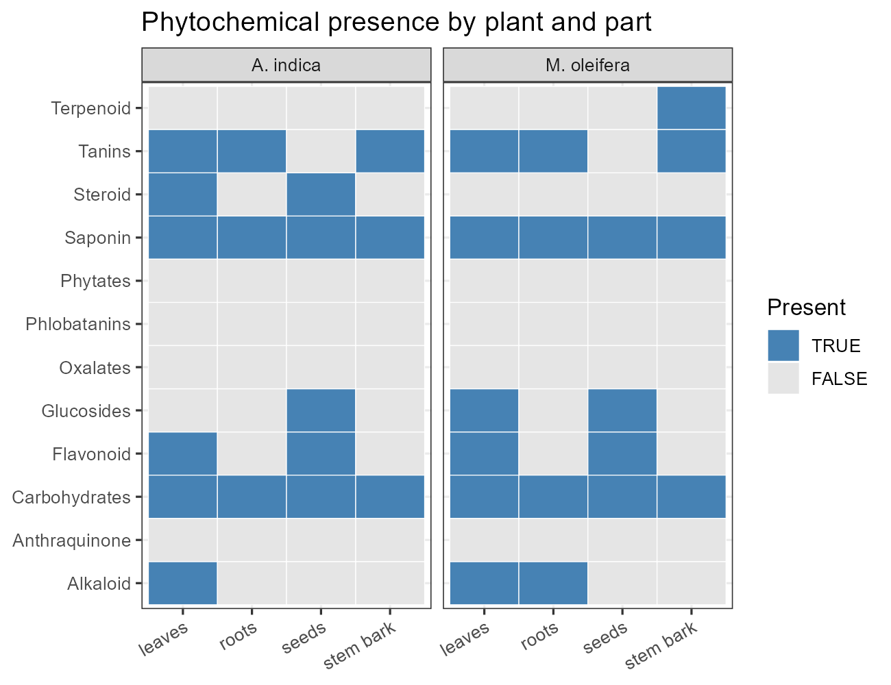
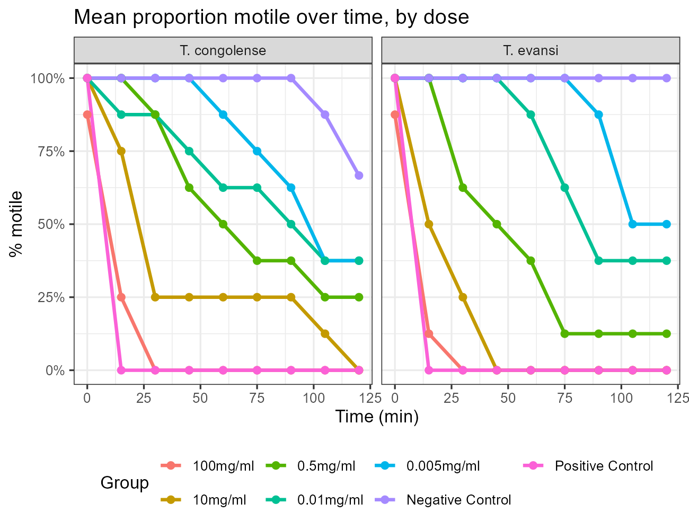
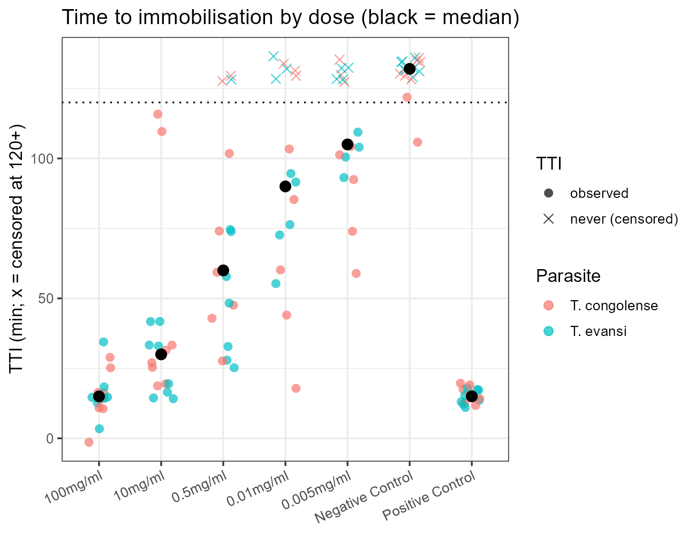
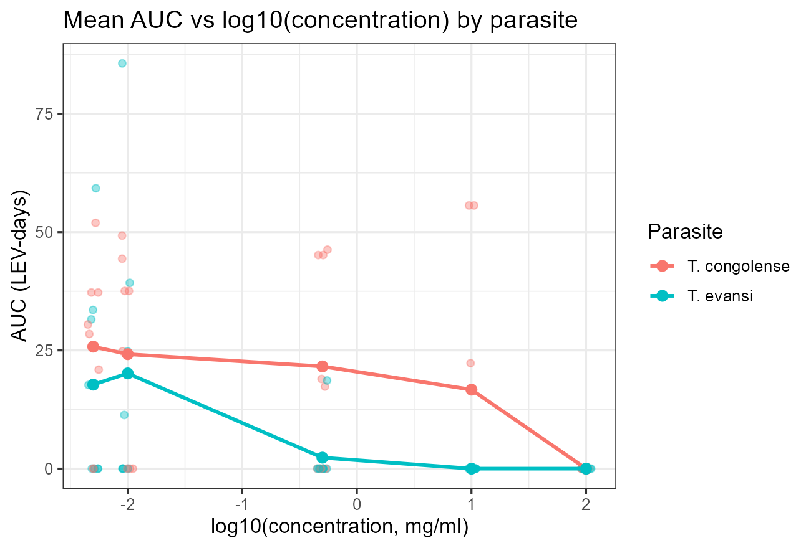
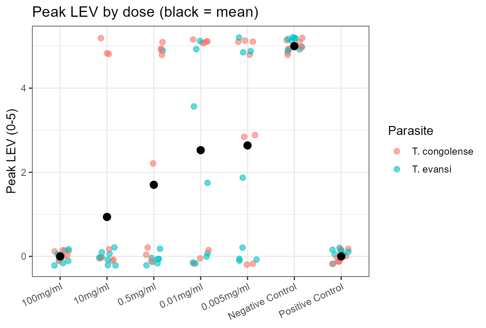
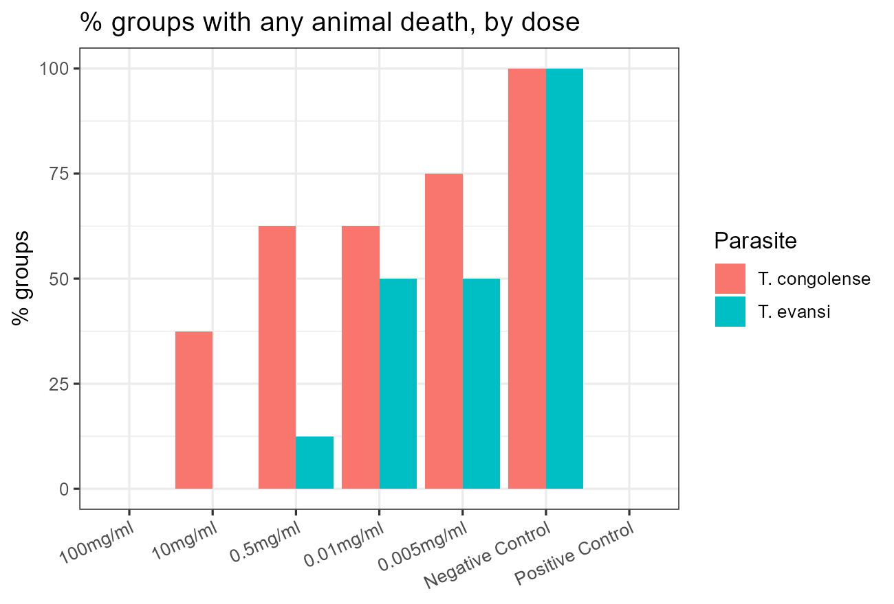
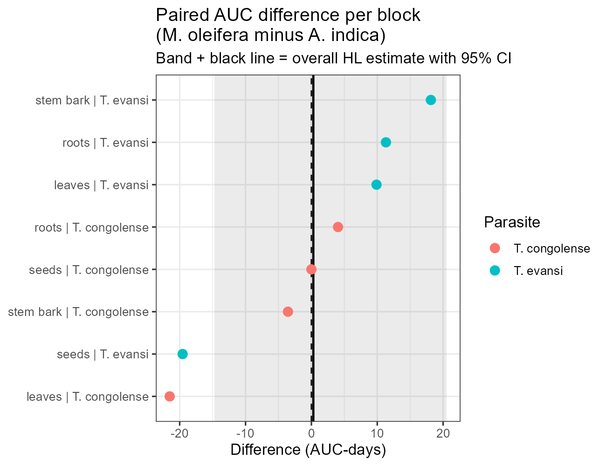
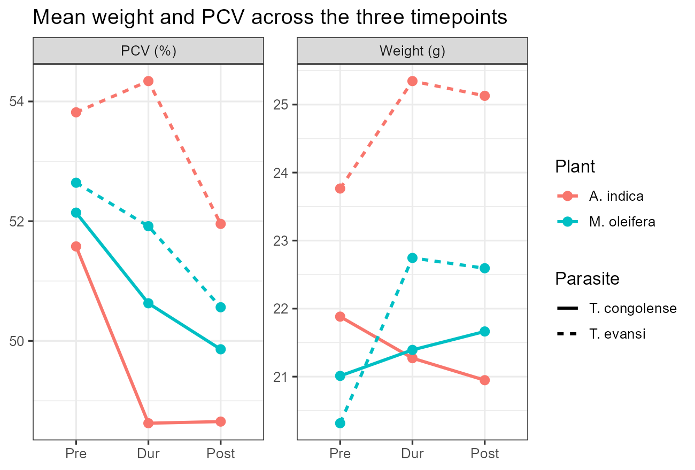

01 · Design
One cell = one block = one plant × part × parasite combination.
02 · Parsing
03 · Objective ii — phytochemistry

04 · Objective iii — in vitro

05 · Time to immobilisation

06 · Objective iv — in vivo

07 · Peak parasitaemia

08 · Mortality

09 · Objective v — superiority

10 · Weight, PCV and toxicity

11 · Robustness and reproduction
Rscript analysis/R/01_build_datasets.R # Sheet 2 → tidy CSVs Rscript analysis/R/02_analysis.R # tests → tables + figures quarto render analysis/reports/report.qmd # → report.docx Rscript analysis/R/render_methods_docx.R # → methods companion
Click any figure to enlarge